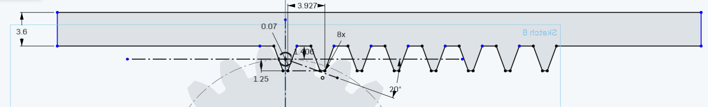

For this assignment, we were asked to model an assembly using more than 1 part with another part that moves. The part geometries had to be constructed using Onshape. The laser-cut components were exported as Adobe Illustrator files to be cut. All Onscape source parts are saved to the cloud and available for public viewing my Onshape document. Additional source files for laser cutting can be found within my github repository.
The general steps that I took in this assignment were:After viewing the scissor linkage mechanism and cup/lid mechanism in class, I tried really hard to think about a mechanism that would be different enough to warrant creation, as well as challenging enough to model. After googling for mechanisms (and being dumbfounded at the complexity of many of them), I settled on recreating a rack pinion mechanism to transform rotational motion into linear motion. Although the mechanism on its own is not particularly interesting/useful, I decided to incorporate the lamp/flashlight used in my previous and use the rack to turn on the flashlight.
I decided I would use cardboard for the part geometries, so I measured the thicknesses of the two different pieces, and also dimensioned the fastener to determine geometrical constraints I would need to take into account with CAD later. The flashlight dimensions from the previous assignment could be reused. Although the rivet (stock part) that would be used to fasten the gear to the rest of the contraption was too shallow for two cardboard parts to be connected, I knew that the forgiving nature of cardboard would allow for press fitting regardless. The measured dimensions are as follows:
Following the demonstration in class, I felt that the bottoms up design process matched more of what I was familiar with and would be easier initially than attempting a top down design. I first created a baseplate, which I sketched then extruded. I knew that this would need to be thicker in order to give my mechanism some sturdiness. Next, I cut out slots for what I felt would be necessary to support my mechanism: two pillars to hold the rack and position it toward the flashlight button, and a support to hold the gear. For all solid parts that were created, I used the Move Face functionality to offset surfaces according to the laser kerf, which I measured to be 0.2mm in early testing. I then designed the support pillars and cut holes/slots in them via extrusion removal to account for the rack and fastener dimensions. They used simple geometry, consisting of rectangles and circles, so not much work was necessary. I used the FeatureScript Spur Gear plugin that was publicly available to create my gear, which I changed the # of teeth for, the module, and the extrude depth to match my cardboard thickness.
This simplified the creation of a gear greatly, but I had a lot of difficulty figuring out how to generate a rack which would be driven by the gear. I did a lot of searching and came across a helpful youtube video. While I did not fully understand the calculations/dimensions being used, I was able to create a rack following more or less the same principles. After these were created as separate parts, I inserted the parts into an assembly and began creating revolute, slider, and fastener mates between the parts where they would interface. (I later decided to add handles to the gear to add minor complexity to the mechanism)
After making sure that the assembly was working more or less as intended, I went back to the Part Studio and exported the part faces that could be used to generate vectors for laser cutting as .DWFs. I opened these files in Inkscape, duplicated what was necessary, and arranged parts that would use the same cardboard to conserve number of print jobs that would need to be run. I then opened the .dwfs in Illustrator and cut them using similar settings to previous assignments. Given the slightly thicker cardboard used this time, I decreased the speed to 15% and 20% for the baseplate (6.9mm) and other parts (3.6mm), respectively. As before, this was done using a checked out MILL laptop + dongle on an Epilog laser cutter.
I did initially try exporting to Rhino and creating .ai files from there, since I had good success with that in the previous assignment. However, the export process seemed to introduce midlines and duplicate vectors that made the prints come out very strange and required additional work within Illustrator.
My initial cut was significantly too loose, because I did not correctly calculate the kerf previously, so I had to rework all the move face offsets that were done with the newly calculated kerf (cut flashlight base with internal major axis diameter of 37.06mm, leading to a kerf 0.2mm). while the larger pieces fit nicely into the baseplate (flashlight, gear support pillar), the rack, rack support pillars, and the gear were far too flimsy to really withstand the forces sustained during press fit assembly.
The gear + rack also did not have any material on which the rotational and linear forces could interact, due to the composition of the cardboard. I experimented with modifying the direction of the cardboard in the laser cutter to remedy these problems, but ultimately I think the fine dimensions made it difficult to overcome the challenges. For example, although the rivet securing diameter was accounted for, I neglected that the "fatter" portion could possible tear my cardboard during the press fit process, given the very thin nature of the bridges. The rack itself was unable to exert force on the button, since the cardboard simply folded/bent when coming into contact with the much more solid features of the flashlight.Given more time in the future, I would probably have modeled the complete flashlight in Onshape as well, to easily determine that the rack would reach the button face, rather than trial and erroring. A different CAD software might be beneficial here, since Onshape did not seem to have collision detection during my short experimentation. I would also have used a more robust material than cardboard for fine dimensions like this, as the parts were often inbetween ply connections, resulting in broken parts after cutting.